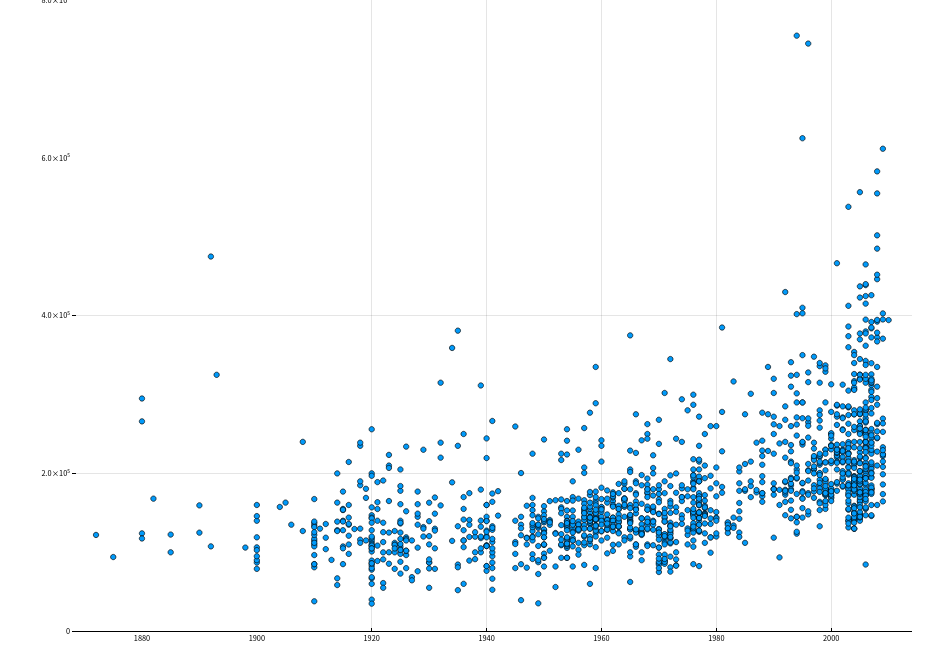
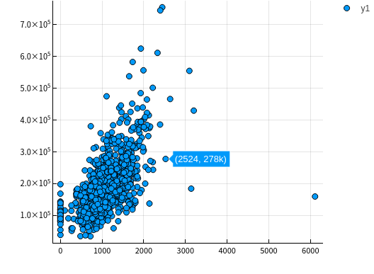
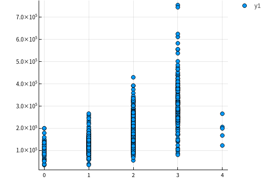
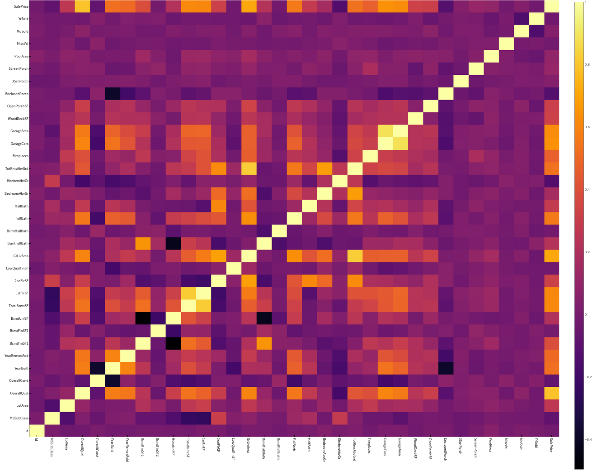
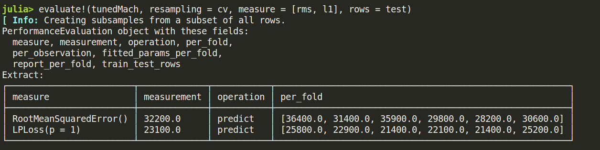

机器学习算法介绍
这里简要介绍下各算法和他们之间的关系，详细理解请百度一下
基本算法
最小二乘法是众多机器学习算法中极为重要的一种基础算法
单纯的最小二乘法对于包含噪声的学习过程经常有过拟合的弱点，这往往是由于学习模型对于训练样本而言过于复杂
l2 约束
由此，引入带有约束条件的最小二乘法 -— Ridge 回归
带有约束条件的最小二乘法和交叉验证法的组合，在实际应用中是非常有效的回归方法
然而，当参数特别多的时候，求解各参数以及学习得到的函数的输出值的过程，都需要耗费大量的时间\
l1 约束
由此，引入可以吧大部分参数都置为0的稀疏学习算法
因为大部分参数都变成了0，所以就可以快速地求解各参数以及学习得到的函数的输出值
l1 + l2 约束
虽然 l1 约束的最小二乘学习法是非常有用的学习方法，但是在实际应用中，经常会遇到些许限制
在 Lasso 回归求解路径中，对于 N×P 的设计矩阵来说，最多只能选出 min(N,p) 个变量
当 p>N 的时候，最多只能选出N个预测变量．因此，对于 p∼N 的情况，Lasso方法不能够很好的选出真实的模型．如果预测变量具有群组效应，则用Lasso回 归时，只能选出其中的一个预测变量
对于通常的 N>P 的情形，如果预测变量中 存在很强的共线性，Lasso的预测表现受控于岭回归
基于以上几点Lasso回归的局限性，Zou和 Hastie在2005年提出了弹性网回归方法，回归系数表达式为
MLJLinearModels 使用
Ridge
RidgeRegressor
RidgeRegression()
RidgeRegression(λ; lambda, fit_intercept, penalize_intercept, scale_penalty_with_samples)
Lasso
LassoRegressor
LassoRegression()
LassoRegression(λ; lambda, fit_intercept, penalize_intercept, scale_penalty_with_samples)
Elastic-Net
ElasticNetRegression
ElasticNetRegression()
ElasticNetRegression(λ)
ElasticNetRegression(λ, γ; lambda, gamma, fit_intercept, penalize_intercept, scale_penalty_with_samples)
说明
其实可以不用管
fit_interceptpenalize_intercept
我也不知道这两个是干什么的，就先别管他们了
总之，只用设置 lambda 就行了
实例 波士顿房价预测
数据准备
竞赛数据来自 https://www.kaggle.com/competitions/house-prices-advanced-regression-techniques/overview
using MLJ, CSV, StableRNGs, MLJLinearModels, Plots
import DataFrames: DataFrame, select, describe
using Statistics
dataTrain = CSV.read("data/train.csv", DataFrame)
dataTest = CSV.read("data/test.csv", DataFrame)
观察各项主要特征与房价售价的关系
分析 SalePrice
存疑
julia> describe(dataTrain[!, :SalePrice])
Summary Stats:
Length: 1460
Missing Count: 0
Mean: 180921.195890
Minimum: 34900.000000
1st Quartile: 129975.000000
Median: 163000.000000
3rd Quartile: 214000.000000
Maximum: 755000.000000
Type: Int64
通过上面的结果可以知道 SalePrice 没有无效或者其他非数值的数据，下面通过图示化来进一步展示 SalePrice

这里需要一个 distplot 函数来绘制图像
得到数组的 distribution
画出这个分布
然而我还不会这个东西，放一放
分析特征数据
| 变量名 数据类型 说明 | ||
| LotArea | Continuous | 地皮面积 |
| GrLiveArea | Continuous | 生活面积 |
| TotalBsmtSF | Continuous | 地下室总面积 |
| MiscVal | Continuous | 其他资产 |
| GarageCars | Count | 容纳车辆 |
| GarageArea | Continuous | 车库面积 |
| YearBuilt | Multiclass | 建造年份 |
| CentralAir | Multiclass | 中央空调 |
| OverallQual | Multiclass | 总体评价 |
| Neighborhood | Multiclass | 地段 |
验证主要特征是否满足要求
类别型特征
CentralAir 中央空调
using StatsPlots let column = :CentralAir columnY = dataTrain[!, :SalePrice] columnX = dataTrain[!, column] boxplot(columnX, columnY) |> display end
可以很明显的看到有中央空调的房价明显更高。OverallQual 总体评价
let column = :OverallQual columnY = dataTrain[!, :SalePrice] columnX = dataTrain[!, column] boxplot(columnX, columnY) |> display end
YearBuilt 建造年份
let column = :YearBuilt columnY = dataTrain[!, :SalePrice] columnX = dataTrain[!, column] boxplot(columnX, columnY, size=(2600, 1200)) |> display end
let column = :YearBuilt columnY = dataTrain[!, :SalePrice] columnX = dataTrain[!, column] boxplot(columnX, columnY, size=(2600, 1200)) |> display scatter(columnX, columnY, ylim=(0, 800000), size=(1500, 1000)) |> display end
最开始我是用了箱线图绘制了房价与建造年份的关系，但是并不十分明显，所以又用点图来显示，可以很明显的看到有线性增长的趋势
Neighborhood 地段
let column = :Neighborhood columnY = dataTrain[!, :SalePrice] columnX = dataTrain[!, column] boxplot(columnX, columnY, size = (1300, 600)) |> display end
这个该怎么分析呢。。。。。。待定
数值型特征
LotArea 地表面积
let column = :LotArea columnY = dataTrain[!, :SalePrice] columnX = dataTrain[!, column] scatter(columnX, columnY) |> display end
好像该特征并没有什么差别，所以不予考虑GrLivArea 生活面积
let column = :GrLivArea columnY = dataTrain[!, :SalePrice] columnX = dataTrain[!, column] scatter(columnX, columnY) |> display end
TotalBsmtSF 地下室总面积
let column = :TotalBsmtSF columnY = dataTrain[!, :SalePrice] columnX = dataTrain[!, column] scatter(columnX, columnY) |> display end
MiscVal
let column = :MiscVal columnY = dataTrain[!, :SalePrice] columnX = dataTrain[!, column] scatter(columnX, columnY) |> display end
GarageArea/GarageCars 车库
let columns = [:GarageArea, :GarageCars] columnY = dataTrain[!, :SalePrice] columnXs = map(column -> dataTrain[!, column], columns) for columnX in columnXs scatter(columnX, columnY) |> display end end

由上面点图可以看出房价与车库面积和容纳车辆数呈现线性关系，所以入选主要特征
更加科学的分析数据
上面的分析可以说非常主观，所以说多多少少还是会不放心，会担心自己选择的特征会不会多了或者少了，
又或者选了一些没有太大作用的特征，所以接下来需要进行更加科学的分析
为了做到更加科学，我们需要作如下工作：
得到各个特征之间的关系矩阵 – correlation matrix
SalePrice 的关系矩阵
绘制出最相关的特征之间的关系图
关系矩阵
教程中有局限性， 关系矩阵只涉及到数值型数据 ，这里我们也这样做，因为他的特征数有80多个，我懒得弄
let _schema = schema(dataTrain)
_names = _schema.names
_scitypes = _schema.scitypes
indexs = collect(map(x -> x == Count || x == Continuous, _scitypes))
columns = _names[indexs] |> collect
_data = select(dataTrain, columns)
_corr = cor(Matrix(_data))
labels = string.(columns)
heatmap(labels, labels, _corr, xrotation = -90, size = figureSize, xticks = :all, yticks = :all) |> display
end

像素块越亮表示两者之间相关性越强，我们可以很清楚地看到与“SalePrice”相关性很强的有
OverallQual总评价YearBuilt建造年份ToatlBsmtSF地下室面积1stFlrSF一楼面积GrLiveArea生活区面积FullBath浴室？what。。。到底什么意思，知道的麻烦说一下TotRmsAbvGrd总房间数（不包括浴室）GarageCars车库可容纳车辆数GarageArea车库面积
[存疑]房价关系矩阵
这里显示相关性最大的10个特征
k = 10 # 关系矩阵中将显示10个特征
cols = corrmat.nlargest(k, 'SalePrice')['SalePrice'].index
cm = np.corrcoef(data_train[cols].values.T)
sns.set(font_scale=1.25)
hm = sns.heatmap(cm, cbar=True, annot=True, \
square=True, fmt='.2f', annot_kws={'size': 10}, yticklabels=cols.values, xticklabels=cols.values)
plt.show()
我不知道这个代码是怎么运行的，他是怎么画出这个热力图的

重点是 corrmat.nlargestk 是怎么得出 10x10 的矩阵
我只做到这里
let _schema = schema(dataTrain)
_names = _schema.names
_scitypes = _schema.scitypes
indexs = collect(map(x -> x == Count || x == Continuous, _scitypes))
columns = _names[indexs] |> collect
labels = string.(columns)
_data = select(dataTrain, columns)
_corr = cor(Matrix(_data))
_dataframe = DataFrame(_corr, columns)
nlarget = _dataframe[partialsortperm(_dataframe[!, :SalePrice], 1:10, rev=true), :]
heatmap(Matrix(nlarget), xrotation = -90, size = figureSize, xticks = :all, yticks = :all, aspect_ratio = :equal)
nrow, ncol = size(_corr)
fontsize = 15
fn(tuple) = (tuple[1], tuple[2], text(round(_corr[tuple[1], tuple[2]], digits = 2), fontsize, :white, :center))
ann = map(fn, Iterators.product(1:nrow, 1:ncol) |> collect |> vec)
annotate!(ann, linecolor = :white) |> display
end

疑点如下
如何获取
Dataframe最大的 10x10 切片Dataframe的字段名也要根据数据排序进行修改吧？
[存疑]绘制关系点图
目前找到一个 PairPlots 包，我还要研究一下
开始模拟数据
处理数据
首先我们选取特征
columns = [:OverallQual, :GrLivArea, :GarageCars, :TotalBsmtSF, :FullBath, :TotRmsAbvGrd, :YearBuilt]定义训练集的处理模型
trainTransformModel = Pipeline( FeatureSelector(features = columns), dataframe -> coerce(dataframe, Count => Continuous))定义测试集的处理模型
processFeature!(dataframe::DataFrame) = begin dataframe[!, :GarageCars] = replace(dataframe[!, :GarageCars], "NA" => missing) dataframe[!, :GarageCars] = map(x -> ismissing(x) ? x : parse(Float64, x), dataframe[!, :GarageCars]) dataframe[!, :TotalBsmtSF] = replace(dataframe[!, :TotalBsmtSF], "NA" => missing) dataframe[!, :TotalBsmtSF] = map(x -> ismissing(x) ? x : parse(Float64, x), dataframe[!, :TotalBsmtSF]) coerce!(dataframe, Count => Continuous) return dataframe end testTransformModel = Pipeline( FeatureSelector(features = columns), processFeature!, FillImputer(features = columns), # Standardizer(features = columns) )处理原始数据，产出数据集
trainTransformMach = machine(trainTransformModel, dataTrain) testTransformMach = machine(testTransformModel, dataTest) fit!(trainTransformMach) fit!(testTransformMach) transformedDataTrain = transform(trainTransformMach, dataTrain) transformedDataTest = transform(testTransformMach, dataTest)拿出训练用数据
X = transformedDataTrain y = coerce(dataTrain[!, :SalePrice], Continuous) train, test = partition(eachindex(y), 0.8, rng=rng)
模型训练
这里我们使用 Ridge 模型来检验
rng = StableRNG(1234)
cv = CV(nfolds = 6, rng = rng)
tuning = Grid(resolution=10, rng = rng)
# MODULE try Ridge
ridge = RidgeRegressor()
rangeLambda = range(ridge, :lambda, lower = 0.1, upper = 10.0, scale=:log)
tunedModel = TunedModel(model = ridge,
range = [rangeLambda],
measure = rms,
resampling = cv,
tuning = tuning)
tunedMach = machine(tunedModel, X, y)
fit!(tunedMach, rows = train)
evaluate!(tunedMach, resampling = cv, measure = [rms, l1], rows = test)

补充: lightGBM 模型训练
LGBMRegressor = @load LGBMRegressor
lgb = LGBMRegressor()
lgbm = machine(lgb, X, y)
boostRange = range(lgb, :num_iterations, lower = 2, upper = 500)
rangeLeaf = range(lgb, :min_data_in_leaf, lower = 1, upper = 50)
rangeIteration = range(lgb, :num_iterations, lower = 50, upper = 100)
rangeMinData = range(lgb, :min_data_in_leaf, lower = 2, upper = 10)
rangeLearningRate = range(lgb, :learning_rate, lower = 0.1, upper = 1)
tunedModel = TunedModel(model = lgb,
tuning = Grid(resolution = 5, rng = rng),
resampling = cv,
ranges = [rangeIteration, rangeMinData, rangeLearningRate],
measure = rms)
tunedMachine = machine(tunedModel, X, y)
fit!(tunedMachine, rows = train)
evaluate!(tunedMach, resampling = cv, measure = [rms, l1], rows = test)

检验测试集数据
这里我们用 lightGBM 产出的数据来提交，不得不说，这个模型老牛逼了
predictions = predict(tunedMachine, transformedDataTest)
output = DataFrame(Id=dataTest.Id)
output[!, :SalePrice] = predictions
CSV.write("data/submission.csv", output)